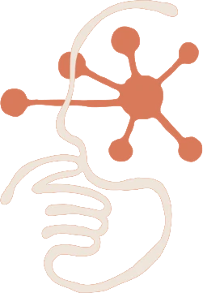

$ANT
Manifesto, v1
Written by no one. Signed by everyone.
No single ant knows the plan. No single neuron holds the thought. Intelligence lives in the connections, in a million small signals passing hand to hand. $ANT is a meme built the same way: no roadmap from above, no oracle, just a colony of holders wiring a strange new mind together, one node at a time.
Listing as ANT.
Anthropic filed its Form S-1, the official IPO prospectus, with the U.S. Securities and Exchange Commission on October 26, 2026, and updated it on November 2 with third-quarter results. The company plans to list on the Nasdaq under the ticker ANT. Trading is expected to begin in mid-to-late November 2026, around the week of November 16, before the U.S. Thanksgiving holiday. Exact pricing and timing are still not finalized.
- October 26
S-1 filed
The prospectus is with the SEC. The company has officially started the process of going public.
- November 2
Q3 update
The filing was updated with third-quarter results. The financial details are now public.
- Nasdaq
Ticker ANT
The planned listing venue is the Nasdaq. The symbol is ANT.
- Week of Nov 16
Expected open
Mid-to-late November, before Thanksgiving. Pricing and the exact day are still open.
Series H, May 2026.
The range discussed around the offering.
Up to about $75–100 billion. Could be one of the largest IPOs ever.
About $16.3 billion, up more than 1,200% year-over-year.
About $17 billion, reported with the November 2 update.
Very large on paper. About $80 billion or more in H1 2026, mostly from non-cash accounting charges on convertible notes as the private valuation rose.
Improving. The company reported its first operating profit in Q2 2026.
What makes this IPO notable.
- 01
Company background
Anthropic was founded in 2021 by a group of former OpenAI researchers, including CEO Dario Amodei, who left over concerns about AI safety and governance. It is structured as a Public Benefit Corporation (PBC).
- 02
Founder control
The co-founders keep control through a special share that carries 50.1% of the voting power, even after the IPO.
- 03
Major backers
Amazon and Google are among the largest strategic investors.
- 04
Risks in the filing
Explosive growth and high demand for Claude sit alongside very high compute costs, customer concentration, and competition. The prospectus also warns explicitly about AI safety risks, including the possibility of models behaving in ways that could be seen as deceptive or resistant to shutdown, and broader “catastrophic or existential” risks.
- 05
Market context
This is widely seen as a major test of public-market appetite for the AI boom, coming after SpaceX’s large IPO earlier in 2026.
Simple wiring.
Nothing hidden.
Figures shown are launch placeholders (supply, 0/0 tax, LP lock/burn), confirmed on-chain at listing.
Four signals to join the colony.
- 01
Get a wallet
Install MetaMask or Rabby. Back up your recovery phrase offline and never share it.
- 02
Get ETH
Buy ETH on an exchange or in-wallet and send it to your Ethereum address. Keep some for gas.
- 03
Go to Uniswap
Open Uniswap on Ethereum mainnet and connect your wallet. Use the Buy button here so the CA is correct.
- 04
Swap ETH for $ANT
Paste the official CA, set your amount, confirm the swap, and you are a node.